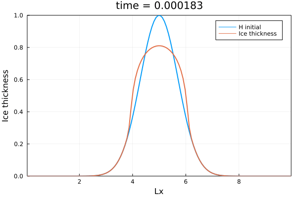
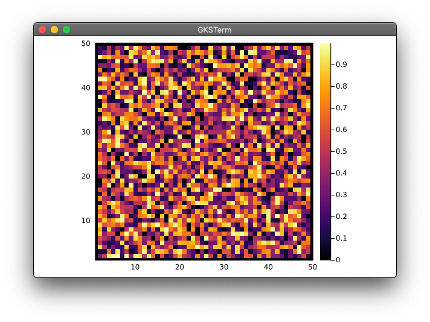
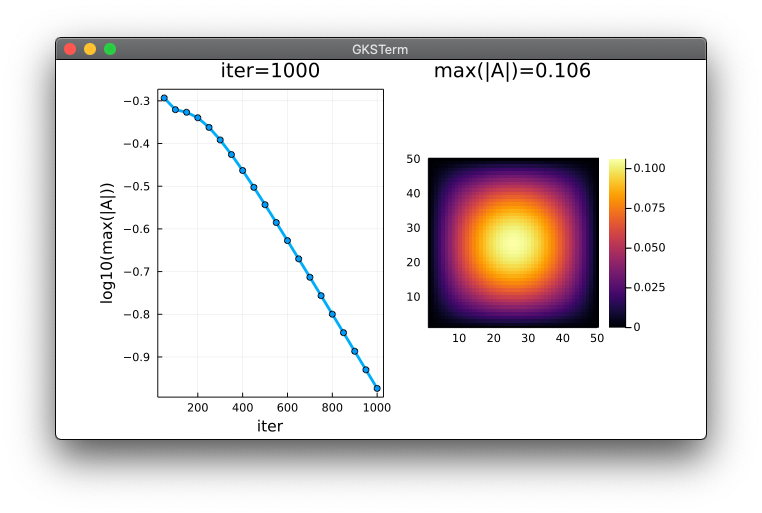
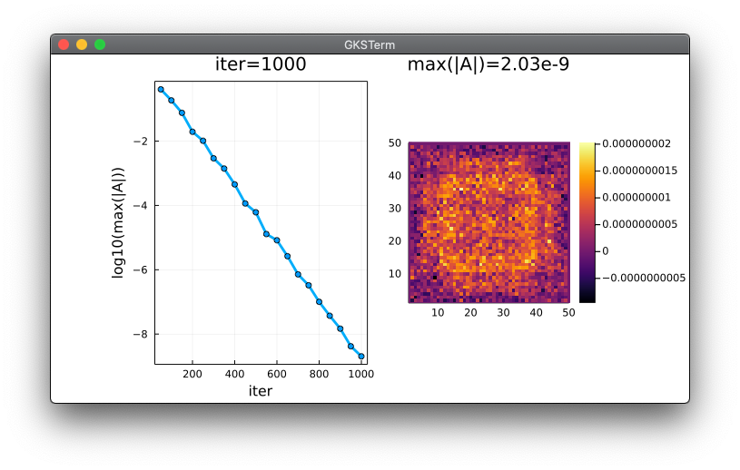
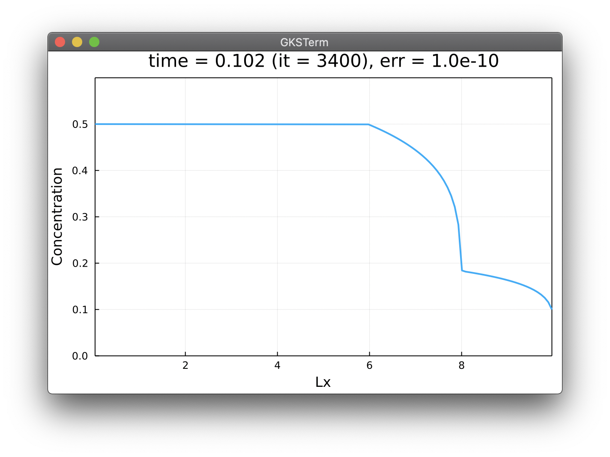
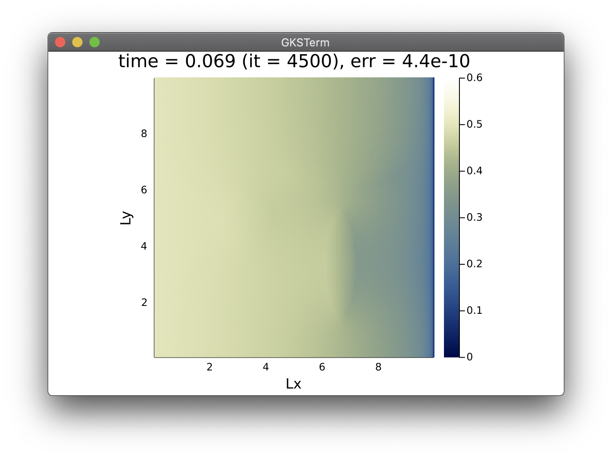

Agenda
📚 Implicit and nonlinear solutions
💻 Julia'sProjectenvironment
🚧 Exercises:
nonlinear diffusion 2D
Laplacian vs damped Laplacian
steady-state implicit nonlinear diffusion 1D & 2D
Nonlinear solutions
Steady-state and implicit iterative solutions
The diffusion equation
Spatial discretisation: 1D and 2D
Finite-differences and staggered grids
Until now we investigated linear and transient processes using a forward Euler explicit time integration.
However many interesting application may exhibit nonlinear behaviours, e.g.,
where could be the ice thickness and a power-law exponent (), as in depth-integrated or shallow ice approximation (SIA) models:

So-called depth-integrated or shallow approximation equations are, e.g., the shallow ice equations or the shallow water equations
Adding nonlinearities in the explicit time integration approach is fairly straight forward.
Let's turn the linear 1D diffusion from lecture 2 into a shallow ice-like solver as push-up exercise.
👉 Download the diffusion_1D.jl script to get you started.
We want to modify the linear 1D diffusion equation
into
where is the effective diffusion coefficient, and the, e.g., the ice thickness.
Starting from the linear 1D diffusion code, we need to:
change C to H
implement the H-dependent diffusion coefficient
update dt definition
Using the following parameters:
D0 = 5.0
n = 5💻 Let's get started 🚀
H-dependent effective diffusion coefficient. Since D is no longer constant, special care is needed for the time step definition dt.D .= (D0.*H).^n
dt = dx^2/maximum(D)/2.1
qx .= .-av(D)where dt must be placed inside the time loop and av is the averaging function defined as
@views av(A) = 0.5.*(A[1:end-1].+A[2:end])👉 Download the diffusion_nl_1D.jl script.
Let's now discuss how to implement steady-state and implicit iterative solvers.
But why?
One may only be interested in the final distribution, or "steady-state".
Strong nonlinearities may not be captured with sufficient accuracy in explicit time integration.
Let's assume we are interested in a steady-state reached by a time-dependent diffusive processes
for time (or ). This parabolic PDE then turns into an elliptic PDE as ,
How to solve ?
Use a direct sparse solver approach: build a system of linear equations in the form , where is the solution vector ( from the Laplacian notation) and the finite-difference coefficient matrix (), then apply the inverse of , , on to retrieve (you may be familiar with a = K \ b).
Use an iterative matrix-free approach: introduce (or bring back) the transient term (from explicit time integration) such that and use it to iteratively reach the steady state, i.e. when .
+unconditionally stable
+insensitive to variation in material parameters (e.g. )
+fast for "few" degrees of freedom (dofs)
-nonlinear growth of memory usage
-slow or impossible to apply to large systems (many dofs)
-complex to implement
+unconditionally stable for physical time (in the residual)
+simple to implement
+low memory usage linearly growing with problem size
-somewhat sensitive to variation in material parameters
-needs tuning of numerical parameters ()
👉 needs second order implementation
the limitations from the "naive" first order implementation
the second order implementation and its benefits.
We will first implement
which we will use as "smoother", applying it to diffuse away initial random noise distribution.
💻 Let's get started implementing the 2D Laplacian
# Laplacian 2D
using Plots
@views function laplacian2D()
return
end
@time laplacian2D()We can use the following model configuration
fact = 1
# Physics
lx, ly = 10, 10
D = 1
# Numerics
nx, ny = fact*50, fact*50
dx, dy = lx/nx, ly/ny
niter = 20*nx
dt = dx^2/D/4.1and initial conditions
# Initial conditions
A = zeros(Float64, nx,ny)
dAdt = zeros(Float64, nx,ny)
A[2:end-1,2:end-1] .= rand(nx-2,ny-2)To display the initial condition:
display(heatmap(A', aspect_ratio=1, xlims=(1,nx), ylims=(1,ny)))
Second, we can implement the time loop.
But, is it iteration loop or time loop?
If we were to solve a physical transient problem (parabolic PDE), this would be the physical time loop.
However, we are here interested in minimising the residual function (such that ). Thus, we are speaking about iterations or pseudo-time (i.e. numerics).
This means that actually, has the meaning of , pseudo-time or numerics.
errv = [] # storage for error
# iteration loop
for it = 1:niter
dAdt[2:end-1,2:end-1] .= D.*( diff(diff(A[:,2:end-1],dims=1),dims=1)/dx^2 .+
diff(diff(A[2:end-1,:],dims=2),dims=2)/dy^2 )
A .= A .+ dt.*dAdt
if it % nx == 0
err = maximum(abs.(A)); push!(errv, err)
p1=plot(nx:nx:it,log10.(errv), linewidth=3, markersize=4,
markershape=:circle, framestyle=:box, legend=false,
xlabel="iter", ylabel="log10(max(|A|))", title="iter=$it")
p2=heatmap(A', aspect_ratio=1, xlims=(1,nx), ylims=(1,ny),
title="max(|A|)=$(round(err,sigdigits=3))")
display(plot(p1,p2, dpi=150))
end
end👉 Download the Laplacian.jl script.
Running the Laplacian.jl code with nx, ny = 50, 50 (thus niter = 1000) produces the following output

So over 1000 iterations, the magnitude of the error () only dropped about 1/2 an order of magnitude.
How can we improve this?
The goal is to reach a steady-state, we thus seek the left-hand-side of the "numerical" parabolic equation
to vanish upon convergence, i.e., . To this end, we are free to add any additional terms as long as they will also tend towards 0 with iterations.
We could thus add a second order term:
where is a numerical parameter to optimise.
Adding specifically this second order term makes the parabolic PDE to switch to an hyperbolic system, e.g., the acoustic wave propagation.
Even better, we actually have now a damped wave equation!
So what's exciting about it?
The first order method, a diffusion-like process (parabolic PDE), converges really slowly because the speed at which information travels during smoothing steps is limited by the diffusive CFL, function of . This limitation will also make the method scale quadratically with numerical resolution increase.
A non-damped wave equation (hyperbolic PDE) features information travelling using the wave CFL, functrion of , and thus the method could scale linearly with numerical resolution increase. However, it would never converge.
The second order method is actually a damped wave equation; the damping introduces a dissipative term that allows to reach a steady state.
We can now tune the damping parameter to minimise the iteration count, finding the sweet spot between slowly converging diffusion and non-dissipative waves.
One classical reference to this method can be found in Frankel (1950), reported as the second order Richardson method.
In the coming weeks, a preprint will be made available that further discusses the second-order method, also named pseudo-transient method, and the optimal damping parameter selection.
💻 Let's try it out. Starting from the Laplacian.jl script we just made, we'll turn it into a Laplacian_damped.jl.
Changes include now the addition of an order flag, damping term dmp, a wave-like time step definition,
order = 2
dmp = 2.0/nx
dt = dx/sqrt(D)/2.1and the second order pseudo-physics
dAdt[2:end-1,2:end-1] .= dAdt[2:end-1,2:end-1]*(1-dmp)*(order-1) .+
dt.*D.*( diff(diff(A[:,2:end-1],dims=1),dims=1)/dx^2 .+
diff(diff(A[2:end-1,:],dims=2),dims=2)/dy^2 )
A .= A .+ dt.*dAdt👉 Download the Laplacian_damped.jl script.
Running the Laplacian_damped.jl code with nx, ny = 50, 50 (thus niter = 1000) produces the following output

Yay, over the same 1000 iterations, the magnitude of the error () now dropped about 8 orders of magnitude.
This is a massive improvement over the first order method for minor changes in code 🙂
Also the second order method:
only adds 1 array read (dAdt), and
is fully local (no global reduction is needed)
Finally, we can verify that the second order method iteration count scales linearly with increase in numerical grid resolution.
Note that various formulations of the second-order implementation exist and lead to a linear scaling of iteration count with resolution increase. A useful and more concise one may be the following one:
dAdt[2:end-1,2:end-1] .= dAdt[2:end-1,2:end-1].*(1-dmp) .+
D.*( diff(diff(A[:,2:end-1],dims=1),dims=1)/dx^2 .+
diff(diff(A[2:end-1,:],dims=2),dims=2)/dy^2 )
A .= A .+ dt.*dAdtThe usage of implicit may be confusing as it often lacks of clear definition and context.
In a physics-based PDE world, an implicit solution most often refers to:
a time-independent solution (steady-state), or
a time-dependant solution where the spatial derivatives are evaluated for the new time integration layer one is actually solving for.
Achieving an implicit solution of following time-dependent diffusive (parabolic) PDE,
implies a time discretisation as
In the iterative framework we previously discussed, a solution of this physical time-dependent diffusion equation can be achieved by:
collecting all physical terms in the right-hand-side (spatial and temporal derivatives),
augmenting the system, on the left-hand-side, by a numerical or pseudo-time integration :
This system can now be solved using the second order method we previously introduced, the physical time derivative acting as a reaction term with the physical time-step acting as a "reaction rate" analogous:
where upon convergence, i.e., upon .
This approach is also known as the "dual-time stepping".
On GitHub, make sure to create a new folder for each week's exercises.
Each week's folder should be a Julia project, i.e. contain a Project.toml file.
This can be achieved by typing entering the Pkg mode from the Julia REPL in the tatrget folder
julia> ]
(@v1.6) pkg> activate .
(lectureXX) pkg> add Plotsand adding at least one package.
In addition, it is recommended to have the following structure and content:
lectureXX
README.md
Project.toml
Manifest.toml
docs/
scripts/
Codes could be placed in the scripts/ folder. Output material to be displayed in the README.md could be placed in the docs/ folder.
The Manifest.toml file should be kept local. An automated way of doing so is to add it as entry to a .gitignore file in the root of your repo. Mac users may also add .DS_Store to their .gitignore.
👉 See Logistics for submission details.
The goal of this exercise is to:
Implement a 2D nonlinear diffusion equation
Consolidate the finite-difference discretisation
In this first exercise, you will port the shallow ice-like 1D nonlinear diffusion code we did in class to a 2D implementation.
Starting from the 1D nonlinear diffusion equation we discussed in lecture 4, extend the 1D code to a 2D configuration. Use the same parameters for the -dimension quantities as the one you already have for the -dimension.
Create a new folder in your GitHub repository for this week's (lecture 4) exercises. In there, create a new Julia script diffusion_nl_2D.jl for this homework. The script should produce a heatmap() plot that updates upon time steps, with labelled axes and physical time displayed as title.
Use nx = 128 and ny = 129 grid points.
Track the maximal ice thickness over time and report it in a plot as function of time.
👉 See Logistics for submission details.
The goal of this exercise is to:
Investigate second-order acceleration
Derive scaling relation (number of iterations as function of number of grid points)
In this exercise you will investigate the scalability of the first and second order iterative schemes discussed during lecture 4.
Start from the Laplacian_damped.jl script we realised in class, which should contain two "switches":
order (1st or 2nd order scheme)
fact (factor to multiply the number of grid points)
👉 Download the Laplacian_damped.jl script here if needed (available after the course).
Add a copy of the Laplacian_damped.jl script we did in class to your exercise folder. Modify that script to perform systematics to assess the scalability of the damped versus the non-damped Laplacian 2D implementation.
As first task, modify the iteration exit criteria such that the you can report the iteration count needed for maximum(abs.(A)) to hit an absolute tolerance of ε = 1e-9.
Using this modified code, realise a scaling experiment where you report the total number of iterations needed to reach ε as function of the number of grid points nx, for nx = 25 * 2 .^ (1:8). Repeat the experiment for both the damped and non-damped implementation (using e.g. the order flag).
Report your scaling results on a figure, plotting the number of iterations as function of the number of grid points. Save the figure as png and include it to the lecture 4 README.md. Comment the trends you observe.
 to insert a figure in the README.md.Investigate the effect of varying the damping parameter dmp on the iteration count, thus on the scaling. Add an additional figure to the README.md and comment about it.
👉 See Logistics for submission details.
The goal of this exercise is to:
Investigate second-order acceleration
Implement a fast implicit nonlinear diffusion solver
In this exercise you will transform the explicit nonlinear 1D diffusion solver to achieve a steady state solution, and, in a second step, achieve a fast solution relying on the second-order implementation. The model could be applied, e.g., to predict spatial distribution of pollutant in the subsurface.
To get started, save a copy of the diffusion_nl_1D.jl script we did in class (also available here after the lecture), name it diffusion_nl_1D_steady_1.jl, and implement the changes tasked below.
As first task, adapt the parameters and the implementation. In the # Physics section, set the total simulation time ttot = 2e4 and move the D0 initialisation to the # Array initialisation section.
In the # Numerics section, add the nonlinear tolerance the solver should converge to, epsi = 1e-10.
Since we are interested in a concentration, rename the quantity to be diffused from H to C, and initialise it as a Gaussian profile centred in with standard deviation and amplitude of 0.5.
Initialise the diffusivity D0 = 5 in every grid point of the domain. In the region , the subsurface is less permeable thus the values of D0=1.5. Also, initialise all arrays that would require it.
Finally, as boundary conditions, fix the concentration in the left () and right () cell centre to 0.5 and 0.1, respectively.
Define the time or iteration loop to, e.g., run from t=0 until t=ttot, and to abort if the error drops below epsi. Note that another implementation of your choice of the loop is fine too. Define the error as the maximum(abs.(∆C)), where ∆C is the difference between the values of concentration before and after the update at every iteration or time step (you can use unicode characters in Julia).
Report graphically the distribution of the concentration C as function of x, adding axes labels and a title reporting time, iteration count and current error.
As you realised, it takes a large amount of iterations to converge the transient problem to a steady state. In this second task, you will accelerate the nonlinear diffusion solver using the second order method.
Duplicate the diffusion_nl_1D_steady_1.jl and rename the copy to diffusion_nl_1D_steady_2.jl.
Then, add to the # Numerics section a relaxation factor rel = 0.1 that we will use to implement a continuation on the nonlinear diffusion coefficient.
In the # Derived numerics section, add the damping factor dmp = 1.0 - 2π/nx, which is the value that will most optimally damp the damped-wave equation we will solve using the second order method.
Initialise the effective diffusion coefficient array D to 1, setting the initial guess for the relaxation.
In the time or iteration loop, implement the relaxation (or continuation) on the effective diffusion coefficient array D, such that at each iteration, (1-rel) from the previous values of D is being added to rel times the new value, computed as (D0.*C).^n (the physical expression of D).
Because we are only interested in the final distribution of C, at steady-state, the time step dt turns in a numerical parameter that no longer needs to be a scalar; it should be defined locally to each grid point; we do no longer need the global reduction maximum(D). Adapt the dt formula to use the local maximum amongst direct neighbouring grid points for D (in every point of the domain).
maxloc() function could be defined as such @views maxloc(A) = max.(A[1:end-2],A[2:end-1],A[3:end]).Finally, and most important, modify the dCdt update operation to incorporate the damping term applied to the values of dCdt from the previous iteration. To implement the second order scheme, turn the dCdt assignment to an update, where you add to current definition of dCdt previous values of dCdt*dmp:
dCdt .= dCdt.*dmp .+ ...Report graphically the distribution of the concentration C as function of x, adding axes labels and title reporting iteration count and current error.
Reflect on the speed-up obtained by the second-order method and feel free to add a comment about it.
🎉 Well-done! This was a long one. Here is a sample output the code should produce:

👉 See Logistics for submission details.
The goal of this exercise is to:
Investigate second-order acceleration
Implement a fast implicit nonlinear diffusion solver in 2D
In this exercise you will transform the fast implicit nonlinear diffusion 1D solver from Exercise 3 to 2D.
To get started, save a copy of the diffusion_nl_1D_steady_2.jl script from Exercise 3 - Task 2, and name it diffusion_nl_2D_steady_2.jl.
You will port the 1D code to 2D, duplicating, if needed, all parameters from the -dimension to the -dimension. (You can keep the definition of the damping term only function of nx since your domain is square.)
In the # Array initialisation, use following functions to initialise 3 ellipses where the background subsurface permeability is reduced from D0 = 5.0 to D0 = 1.5:
rad2_1 = (xc .- 2*Lx/3).^2 .* 3 .+ (yc' .- Ly/3).^2 ./ 4
rad2_2 = (xc .- 2*Lx/3).^2 ./ 4 .+ (yc' .- 2*Ly/3).^2 .* 3
rad2_3 = (xc .- Lx/3).^2 .* 1 .+ (yc' .- Ly/2).^2 ./ 1Use these "radius" functions to set the values of D0 = 1.5 when the radius is smaller then 1.0 (for all 3 cases).
As boundary conditions, set C = 0.5 at and C = 0.1 at . Implement a "no-flux" boundary condition ( vanishes in the direction orthogonal to the boundary) at and .
maxloc() function for 2D purposes, taking the local maximum amongst all 8 neighbours for each grid point.Report graphically the distribution of concentration C as function of x and y using a heatmap plot, adding axes labels and title reporting time, iteration count and current error.
Here is a sample output the code should produce:
